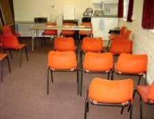

The Tovey Room, previously known as the Conference Room consists of a 10.7 sqm open area.
Tovey who was trustee from 1942-1952 Margaret Tovey was Hon secretary from 1948-1974.Rev Duncan Crookes Tovey 1842-1912
had been rector in St Mary’s Parish as well as Worplesdon Parish council chairman from 1899-1909. Plus had played huge
part in village life while he lived here. His son also named Duncan died in WW1 in 1918 leaving widow and two sons and a
daughter as children. Margaret Joan Woodd Walker later became the wife of one of the sons also named Duncan Lorimer
Pattison Tovey 1903-1948. Margaret was also co- author of two history booklets produce called Notes on the history of
Worplesdon and the other Worplesdon Old and New. ( named as Joan Tovey) she was very involved in village life and the
heavily involved in WI and also of course neighbour of Sidney and Mary Sime recommending to her friend Mary to leave
Sidney’s art work to the trustees of the Memorial hall for the purpose of exhibiting her husband’s collection of
drawings and paintings bequeathing in her will monies to build a room at the hall. Sir Laurence Halsey had been
consulted on this matter before his death.